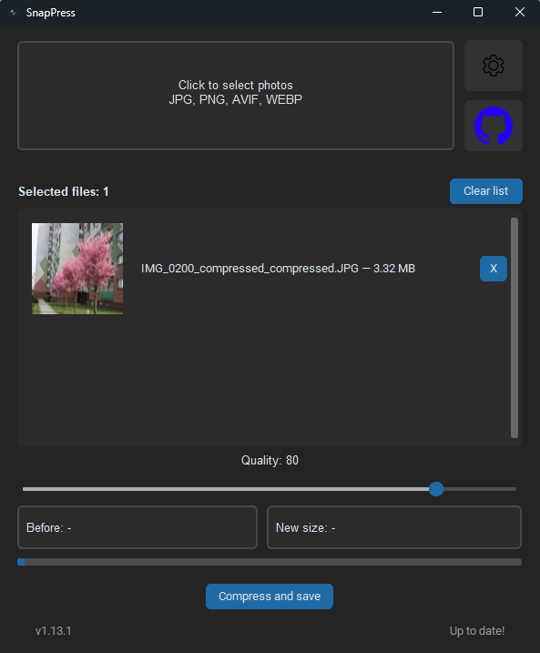

Batch Processing
Compress multiple JPEG and PNG images in one operation.
Compress JPEG and PNG images without sacrificing quality.
Current version: v1.13.1

Everything you need to compress images quickly and efficiently.
Compress multiple JPEG and PNG images in one operation.
Keep important metadata while reducing file size.
Remove GPS data while preserving the remaining EXIF metadata.
Dark mode, customizable thumbnails and persistent settings.
Optimized for speed with a lightweight and responsive interface.
Choose where compressed images are saved.